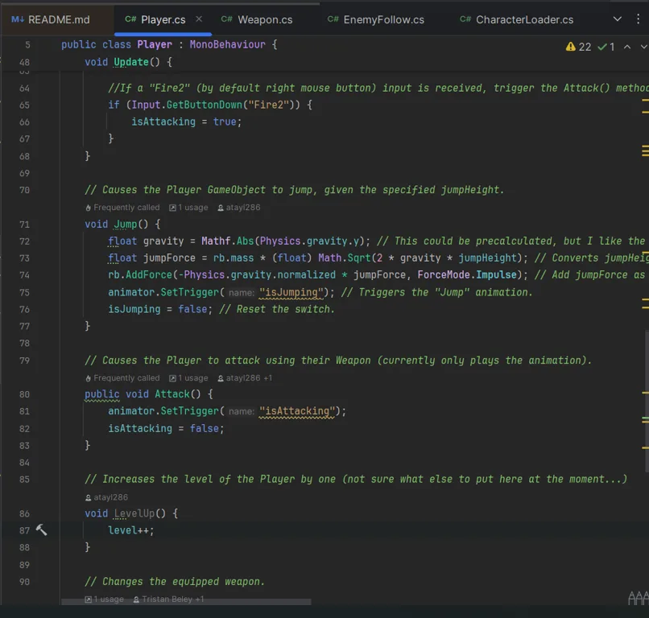

Escape PolyLand
A team-built, low-poly 3D RPG with enemy AI, puzzles, multiple levels, and a final boss encounter.

The starting point
The team needed to bring combat, puzzles, and progression together into a playable game. Each system had to work on its own and still fit into the same world.
What I built
Working with a group of four, I helped create the game in Unity using C#, Cinemachine, and Blender assets. The game features custom enemy behavior and a progression system that leads through multiple levels to the boss fight.
Under the hood
Enemy behavior, puzzle logic, and level progression each introduce their own state. Breaking large features into smaller systems helped the team reason about those interactions and test changes.
What stayed with me
Shared game development made version control and communication essential. Keeping work divided into manageable systems helped us coordinate changes without losing sight of the complete game.